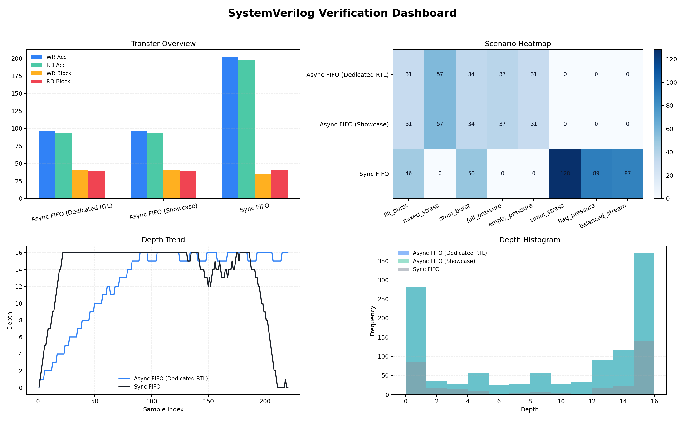
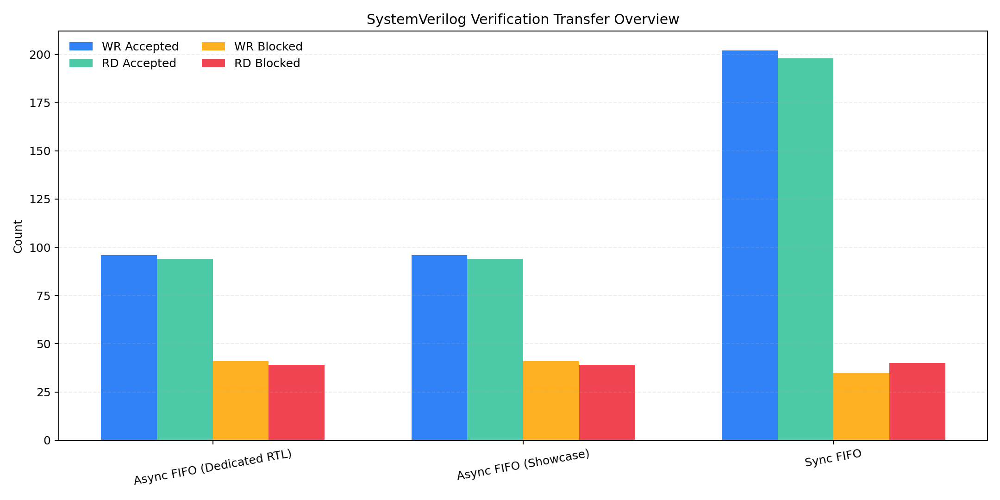
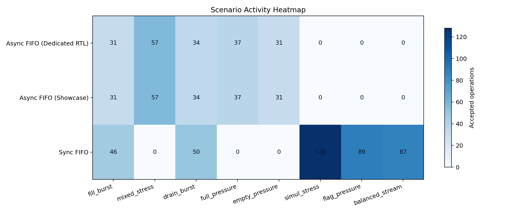
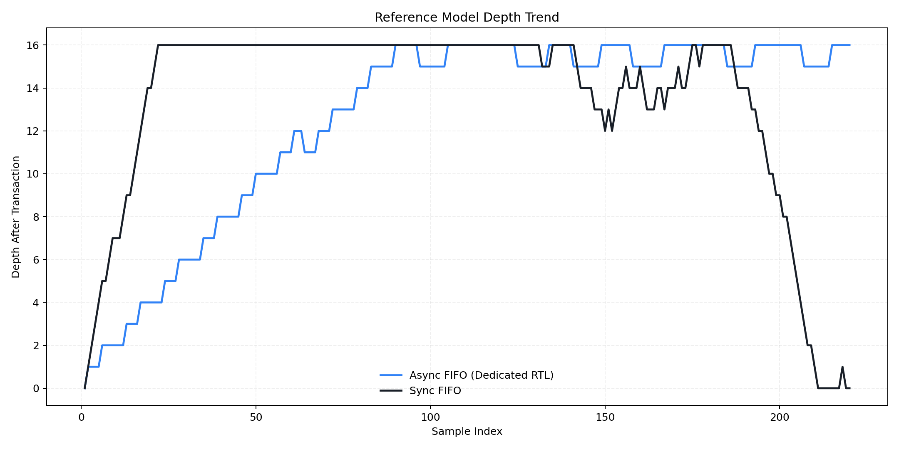
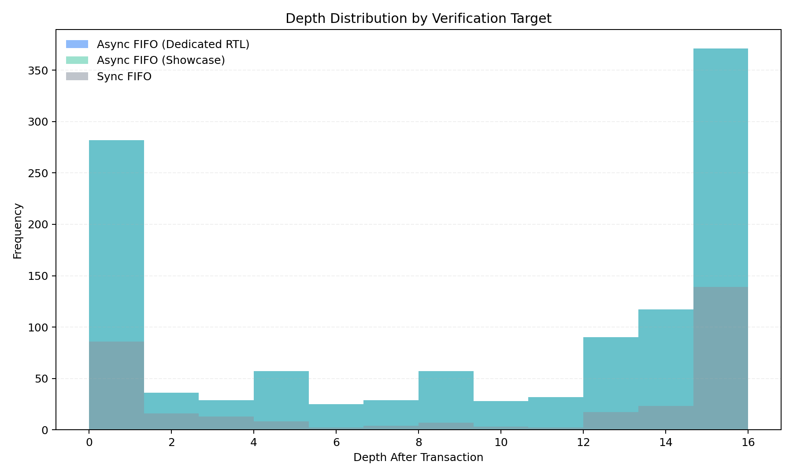

SystemVerilog Portfolio
Python 시각화 검증 보고서
TB scoreboard가 직접 생성한 CSV를 Python으로 다시 시각화해 만든 포트폴리오용 보고서입니다.
PASS/FAIL만 보여주는 수준을 넘어서, scenario별 activity, accepted/blocked path, depth 변화까지 정리했습니다.
- TB scoreboard가 직접 만든 CSV를 기반으로 Python에서 다시 시각화해 재현 가능한 분석 흐름을 구성했습니다.
- accepted path와 blocked path를 함께 집계해 full/empty boundary behavior까지 근거 자료로 남겼습니다.
- clocking block을 drive, pre-sample, post-sample 단계로 분리해 XSim 기준 clean pass가 유지되도록 정렬했습니다.
현재 이 HTML 대시보드는 FIFO 계열 showcase의 CSV/그래프 해석을 중심으로 구성돼 있습니다.
UART RX, UART+FIFO, UART TX+FIFO, UART+async FIFO는 모듈별 상세 보고서와 Vivado 로그에서 이어서 확인할 수 있도록 정리했습니다.
UART 확장 안내
UART Reports
UART 추가분은 별도 상세 보고서로 정리했습니다
UART 계열은 protocol, bridge timing, scenario coverage, assertion 설명 비중이 높아 별도 문서에서 더 자세히 설명합니다.
../markdown/module_reports/uart_rx_report_ko.md
../markdown/module_reports/uart_fifo_report_ko.md
../markdown/module_reports/uart_tx_fifo_report_ko.md
../markdown/module_reports/uart_async_fifo_report_ko.md
../../evidence/logs/uart_rx_vivado.log / uart_fifo_vivado.log / uart_tx_fifo_vivado.log / uart_async_fifo_vivado.log
모듈 요약 카드
Async FIFO (Dedicated RTL)
PASS
1,153 samples observed
Accepted path와 blocked path를 함께 집계해 boundary condition까지 검증한 결과입니다.
- PASS
- 190
- FAIL
- 0
- WR Acc
- 96
- RD Acc
- 94
- WR Block
- 41
- RD Block
- 39
Async FIFO (Showcase)
PASS
1,153 samples observed
Accepted path와 blocked path를 함께 집계해 boundary condition까지 검증한 결과입니다.
- PASS
- 190
- FAIL
- 0
- WR Acc
- 96
- RD Acc
- 94
- WR Block
- 41
- RD Block
- 39
Sync FIFO
PASS
320 samples observed
Accepted path와 blocked path를 함께 집계해 boundary condition까지 검증한 결과입니다.
- PASS
- 838
- FAIL
- 0
- WR Acc
- 202
- RD Acc
- 198
- WR Block
- 35
- RD Block
- 40
클래스별 역할
Class Architecture
Async FIFO (Dedicated RTL)
- `transaction`: preFull/preEmpty, request, response를 함께 담아 accepted transaction 판정 근거를 보관
- `generator`: fill, mixed, drain, pressure phase bias를 주는 constrained-random stimulus 생성
- `driver`: dual-clock driver clocking block으로 negedge에서 request를 세팅
- `monitor`: pre_cb와 mon_cb를 분리해 acceptance 기준과 post-update 결과를 각각 샘플링
- `scoreboard`: accepted write/read만 reference queue에 반영하고 data/flag 정합성 판정
- `coverage`: scenario, domain, path, flag, cross 항목을 수집
- `environment`: mailbox와 종료 이벤트를 연결하고 전체 실행 수명주기를 제어
Class Architecture
Async FIFO (Showcase)
- `transaction`: preFull/preEmpty, request, response를 함께 담아 accepted transaction 판정 근거를 보관
- `generator`: fill, mixed, drain, pressure phase bias를 주는 constrained-random stimulus 생성
- `driver`: dual-clock driver clocking block으로 negedge에서 request를 세팅
- `monitor`: pre_cb와 mon_cb를 분리해 acceptance 기준과 post-update 결과를 각각 샘플링
- `scoreboard`: accepted write/read만 reference queue에 반영하고 data/flag 정합성 판정
- `coverage`: scenario, domain, path, flag, cross 항목을 수집
- `environment`: mailbox와 종료 이벤트를 연결하고 전체 실행 수명주기를 제어
Class Architecture
Sync FIFO
- `transaction`: request, response, pre-count 기반 판정에 필요한 snapshot을 보관
- `generator`: fill, simul, drain, pressure, balanced phase를 생성
- `driver`: single-clock driver clocking block으로 negedge에 request와 data를 고정
- `monitor`: 다음 negedge #1step 시점에서 cycle 결과를 수집
- `scoreboard`: same-cycle read/write 정책을 반영한 queue model 유지
- `coverage`: scenario, request mix, path, flag, cross 항목을 수집
- `environment`: 컴포넌트 생성, 연결, preset, 종료 제어 담당
차트
Python Visualization
Verification Dashboard
대표 차트 4개를 한 화면에서 볼 수 있는 메인 대시보드입니다.

Python Visualization
Module Transfer Overview
모듈별 accepted와 blocked count를 비교해 검증 범위를 설명합니다.

Python Visualization
Scenario Activity Heatmap
시나리오별 activity 분포를 통해 pressure path와 정상 path가 모두 발생했는지 보여줍니다.

Python Visualization
Reference Model Depth Trend
trace CSV를 기준으로 queue depth의 시계열 변화를 시각화했습니다.

Python Visualization
Depth Histogram
depth 분포를 통해 경계 상태와 중간 상태가 어떻게 나타났는지 확인할 수 있습니다.

그래프 해석 가이드
Chart Guide
1. Verification Dashboard
4개 핵심 그래프를 한 화면에 모은 요약판입니다. 발표나 포트폴리오 첫 장에서 전체 검증 범위를 빠르게 설명하기 위해 넣었습니다.
Chart Guide
2. Module Transfer Overview
x축은 모듈, y축은 횟수입니다. WR/RD accepted와 WR/RD blocked를 함께 보여줘 정상 경로뿐 아니라 full/empty 경계 조건까지 실제로 검증했는지 설명하기 위해 선택했습니다.
Chart Guide
3. Scenario Activity Heatmap
x축은 시나리오, y축은 모듈이며 각 셀의 색과 숫자는 accepted activity 양입니다. 어떤 시나리오가 실제로 활발히 수행되었는지 한눈에 보이게 하려는 의도입니다.
Chart Guide
4. Reference Model Depth Trend
x축은 sample index, y축은 transaction 이후의 reference model depth입니다. FIFO가 fill, mixed, drain 흐름을 따라 실제로 차고 비는지를 시간 순서로 보여주기 위해 넣었습니다.
Chart Guide
5. Depth Histogram
x축은 depth 값, y축은 해당 depth가 등장한 빈도입니다. 테스트가 특정 구간에만 몰리지 않고 empty/full 근처 경계 상태까지 얼마나 넓게 밟았는지 설명하기 위한 분포 그래프입니다.
Coverage 설정 설명 및 근거
Coverage Plan
Scenario Coverage
generator가 설계한 phase-aware 시나리오가 실제로 모두 실행됐는지 보는 항목입니다.
단순 랜덤 분포가 아니라 fill, mixed, drain, pressure 구간이 모두 존재해야 한다는 설계 의도를 담고 있습니다.
Coverage Plan
Path Coverage
`wr_acc`, `rd_acc`와 함께 `wr_block`, `rd_block`를 반드시 남기도록 한 이유는 정상 경로만 아니라
full/empty 보호 경로까지 검증 근거로 남기기 위해서입니다.
Coverage Plan
Flag and Cross Coverage
`full`, `empty`, `normal` 상태와 scenario/request mix/domain을 교차해
특정 시나리오가 실제로 어떤 경계 상태를 만들었는지 연결합니다.
Coverage Plan
Why CSV Again
XSim의 coverage 퍼센트 하나만으로는 의도가 잘 전달되지 않아,
scoreboard가 직접 만든 summary/scenario/trace CSV를 Python에서 다시 읽어 coverage 해석 근거를 보강했습니다.
시나리오 상세 설명
Scenario Guide
fill_burst
목적: queue depth를 빠르게 끌어올려 full 근처 동작과 write blocked path를 의도적으로 만든 시나리오입니다.
커버리지 해석: WR Acc가 충분히 나오면서 WR Block이 함께 관측되면 fill/full pressure가 실제로 검증된 것입니다.
Scenario Guide
mixed_stress
목적: read/write를 섞어 일반 운용 구간에서 ordering과 accepted path를 동시에 검증하는 시나리오입니다.
커버리지 해석: WR Acc와 RD Acc가 함께 높게 나타나면 scoreboard ordering 검증이 활발히 수행된 것으로 해석합니다.
Scenario Guide
drain_burst
목적: queue를 비우는 방향으로 bias를 줘 empty 근처 동작과 read blocked path를 유도하는 시나리오입니다.
커버리지 해석: RD Acc와 RD Block이 함께 나타나면 drain과 underflow protection이 모두 검증된 것입니다.
Scenario Guide
full_pressure
목적: 깊이가 높은 상태에서 write를 지속적으로 인가해 backpressure와 full flag 일관성을 보는 시나리오입니다.
커버리지 해석: WR Block이 의미 있게 잡히면 DUT가 full 보호를 수행했고 monitor/scoreboard가 이를 포착한 것입니다.
Scenario Guide
empty_pressure
목적: 비어 있는 상태에서 read를 반복해 underflow protection과 empty flag 일관성을 확인하는 시나리오입니다.
커버리지 해석: RD Block이 의미 있게 나타나면 empty 보호 경로가 실제로 수행된 것입니다.
Scenario Guide
simul_stress
목적: sync FIFO에서 same-cycle read/write 정책을 강하게 두드리는 시나리오입니다.
커버리지 해석: WR Acc와 RD Acc가 같은 구간에서 동시에 높으면 동시 처리 정책 검증이 충분히 일어났다고 볼 수 있습니다.
Scenario Guide
flag_pressure
목적: sync FIFO의 full/empty 근처를 반복적으로 두드려 flag 경계 조건과 blocked path를 강조하는 시나리오입니다.
커버리지 해석: WR Block 또는 RD Block이 함께 보이면 boundary pressure가 실제로 먹혔다는 의미입니다.
Scenario Guide
balanced_stream
목적: 한쪽으로 치우치지 않은 steady-state traffic에서 sustained throughput과 flag 안정성을 보는 시나리오입니다.
커버리지 해석: WR Acc와 RD Acc가 균형 있게 유지되면 steady-state stream 검증 근거로 활용할 수 있습니다.
시나리오별 커버리지 집계
| 모듈 |
시나리오 |
샘플 |
WR Acc |
RD Acc |
WR Block |
RD Block |
Activity |
해석 포인트 |
| Async FIFO (Showcase) |
fill_burst |
229 |
23 |
8 |
19 |
1 |
31 |
WR Acc가 충분히 나오면서 WR Block이 함께 관측되면 fill/full pressure가 실제로 검증된 것입니다. |
| Async FIFO (Showcase) |
mixed_stress |
231 |
28 |
29 |
6 |
0 |
57 |
WR Acc와 RD Acc가 함께 높게 나타나면 scoreboard ordering 검증이 활발히 수행된 것으로 해석합니다. |
| Async FIFO (Showcase) |
drain_burst |
231 |
10 |
24 |
0 |
18 |
34 |
RD Acc와 RD Block이 함께 나타나면 drain과 underflow protection이 모두 검증된 것입니다. |
| Async FIFO (Showcase) |
full_pressure |
231 |
26 |
11 |
16 |
0 |
37 |
WR Block이 의미 있게 잡히면 DUT가 full 보호를 수행했고 monitor/scoreboard가 이를 포착한 것입니다. |
| Async FIFO (Showcase) |
empty_pressure |
230 |
9 |
22 |
0 |
20 |
31 |
RD Block이 의미 있게 나타나면 empty 보호 경로가 실제로 수행된 것입니다. |
| Async FIFO (Dedicated RTL) |
fill_burst |
229 |
23 |
8 |
19 |
1 |
31 |
WR Acc가 충분히 나오면서 WR Block이 함께 관측되면 fill/full pressure가 실제로 검증된 것입니다. |
| Async FIFO (Dedicated RTL) |
mixed_stress |
231 |
28 |
29 |
6 |
0 |
57 |
WR Acc와 RD Acc가 함께 높게 나타나면 scoreboard ordering 검증이 활발히 수행된 것으로 해석합니다. |
| Async FIFO (Dedicated RTL) |
drain_burst |
231 |
10 |
24 |
0 |
18 |
34 |
RD Acc와 RD Block이 함께 나타나면 drain과 underflow protection이 모두 검증된 것입니다. |
| Async FIFO (Dedicated RTL) |
full_pressure |
231 |
26 |
11 |
16 |
0 |
37 |
WR Block이 의미 있게 잡히면 DUT가 full 보호를 수행했고 monitor/scoreboard가 이를 포착한 것입니다. |
| Async FIFO (Dedicated RTL) |
empty_pressure |
230 |
9 |
22 |
0 |
20 |
31 |
RD Block이 의미 있게 나타나면 empty 보호 경로가 실제로 수행된 것입니다. |
| Sync FIFO |
fill_burst |
64 |
31 |
15 |
33 |
1 |
46 |
WR Acc가 충분히 나오면서 WR Block이 함께 관측되면 fill/full pressure가 실제로 검증된 것입니다. |
| Sync FIFO |
simul_stress |
64 |
64 |
64 |
0 |
0 |
128 |
WR Acc와 RD Acc가 같은 구간에서 동시에 높으면 동시 처리 정책 검증이 충분히 일어났다고 볼 수 있습니다. |
| Sync FIFO |
drain_burst |
64 |
19 |
31 |
0 |
33 |
50 |
RD Acc와 RD Block이 함께 나타나면 drain과 underflow protection이 모두 검증된 것입니다. |
| Sync FIFO |
flag_pressure |
64 |
43 |
46 |
2 |
0 |
89 |
WR Block 또는 RD Block이 함께 보이면 boundary pressure가 실제로 먹혔다는 의미입니다. |
| Sync FIFO |
balanced_stream |
63 |
45 |
42 |
0 |
6 |
87 |
WR Acc와 RD Acc가 균형 있게 유지되면 steady-state stream 검증 근거로 활용할 수 있습니다. |
Assertion과 자동 판정
Assertion
Async FIFO (Dedicated RTL)
- `async_fifo_if.sv`: write/read domain에서 `oFull && oEmpty` 동시 high 금지
- `async_fifo_if.sv`: reset 이후 `oEmpty=1`, `oFull=0` 기대
- `async_fifo_driver.svh`: `vif`, `transaction` null 여부 immediate assertion
- `async_fifo_scoreboard.svh`: mismatch 시 `$fatal`로 즉시 fail 처리
Assertion
Async FIFO (Showcase)
- `fifo_if.sv`: write/read domain에서 `oFull && oEmpty` 동시 high 금지
- `fifo_if.sv`: reset 이후 `oEmpty=1`, `oFull=0` 기대
- `fifo_driver.svh`: `vif`, `transaction` null 여부 immediate assertion
- `fifo_scoreboard.svh`: mismatch 시 `$fatal`로 즉시 fail 처리
Assertion
Sync FIFO
- `sync_fifo_if.sv`: `oFull && oEmpty` 동시 high 금지
- `sync_fifo_if.sv`: reset 이후 `oEmpty=1`, `oFull=0` 기대
- `sync_fifo_scoreboard.svh`: data/flag mismatch 시 즉시 fail 처리
Timing Note
Clocking Block 기반 샘플링
driver는 `negedge` 기반 clocking block으로 입력을 인가하고, monitor는 `pre_cb`와 `mon_cb`를 분리해
acceptance 판정 근거와 post-update 결과를 각각 수집합니다. 수동 지연 대신 clocking block에 타이밍 의도를 담았습니다.
Coverage Note
숫자보다 관측 범위를 설명
covergroup 항목과 scoreboard summary를 함께 사용해 scenario hit, accepted/blocked path, flag state를 읽을 수 있게 했습니다.
포트폴리오에서는 단일 퍼센트보다 어떤 검증 경로가 실제로 관측되었는지가 더 중요합니다.
Portfolio Folder
바로 가져다 쓸 수 있는 패키지
이 HTML, Markdown, 차트 PNG, 통합 CSV는 모두 같은 폴더에 정리해 두었습니다.
이후 GitHub 업로드나 발표 자료로 바로 재사용하기 쉽게 구성했습니다.
자료 경로
reports/html/systemverilog_python_visual_report_ko.html
reports/markdown/overview/systemverilog_python_visual_report_ko.md
reports/html/assets
evidence/csv